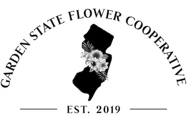
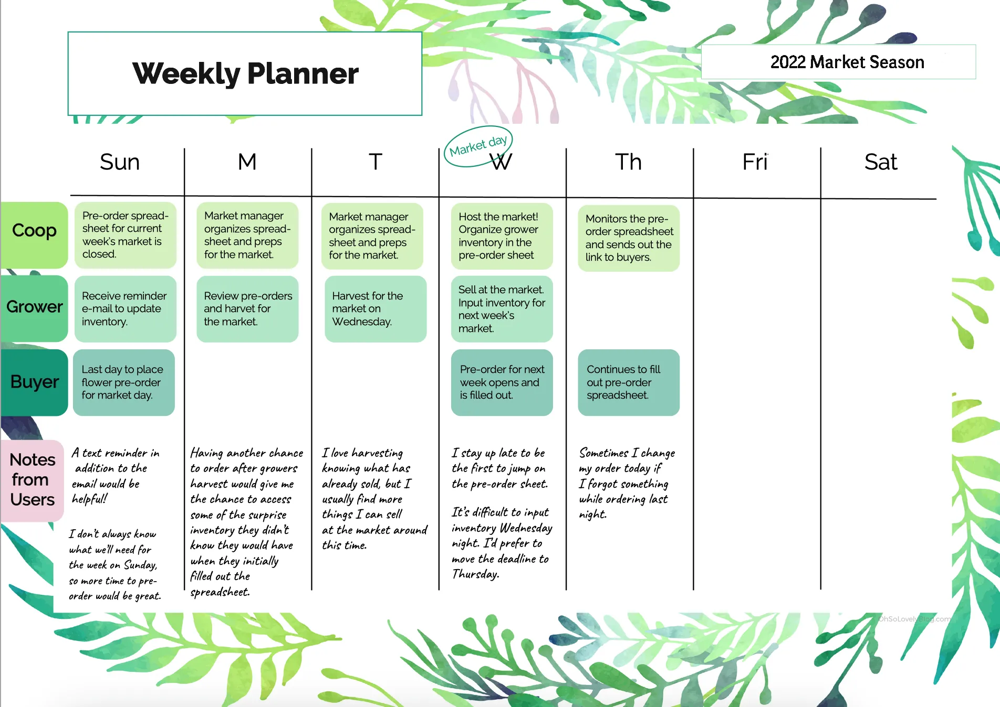
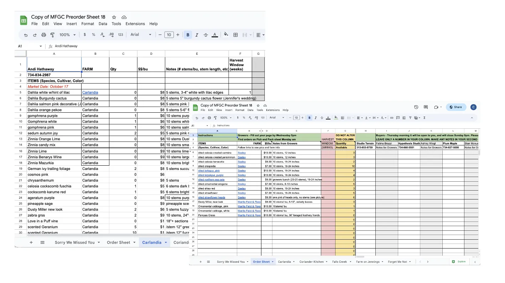
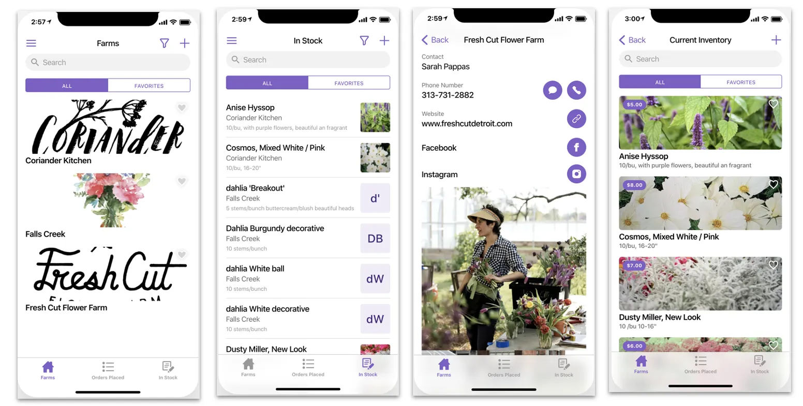

Garden State Flower Cooperative Preorder Project
Problem Statement
I was hired by the Garden State Flower Cooperative to conduct user experience research and redesign their existing pre-ordering system for their weekly markets. After conducting interviews, a journey map and a participatory design session, I implemented, designed, and tested a new mobile-friendly preordering system, increasing user engagement and overall preorders by over 200%.
Preliminary UI/UX Research
I led a comprehensive user experience research initiative for the co-op's pre-order process, employing qualitative UX research techniques that involved engaging flower growers and florists through interviews. To gain deeper insights, I crafted a detailed journey map of their experience and facilitated a participatory design session to foster collaboration.

Old Preorder System
Previously, growers and buyers utilized a shared Google Sheet to add inventory and place preorders for the upcoming market day.

New Preorder System
Armed with valuable insights and recommendations, I spearheaded the implementation of an advanced mobile pre-ordering system. This innovative solution enables florists and buyers to effortlessly add inventory and place pre-orders for the upcoming market day, all from the convenience of any mobile device. We also empowered growers to manage and fulfill orders on-the-go, thanks to a user-friendly interface accessible on their phones.s
New features include:
- Photos can be easily uploaded and viewed by both growers and buyers
- Inventory is automatically adjusted based on the preorder schedule
- Support for both mobile phone and tablet based browsing
- Advanced filtering and sorting for specific flowers types, colors, and more
- Created two additional mobile applications for bouquet preorders and preordering through partners.

Deliverables
After the preliminary research was conducted and the new preorder system was rolled out, three virtual training sessions were conducted with the following documentation delivered to the GSFC's stakeholders:
- Internal training with the GSFC board of directors
- B2B training with the ~20 flower farm growers, who add hundreds of inventory to the pre-order system ever week.
- B2C training with the ~40 florists, who pre-order, pick-up, and purchase flowers at the upcoming weekly flower market